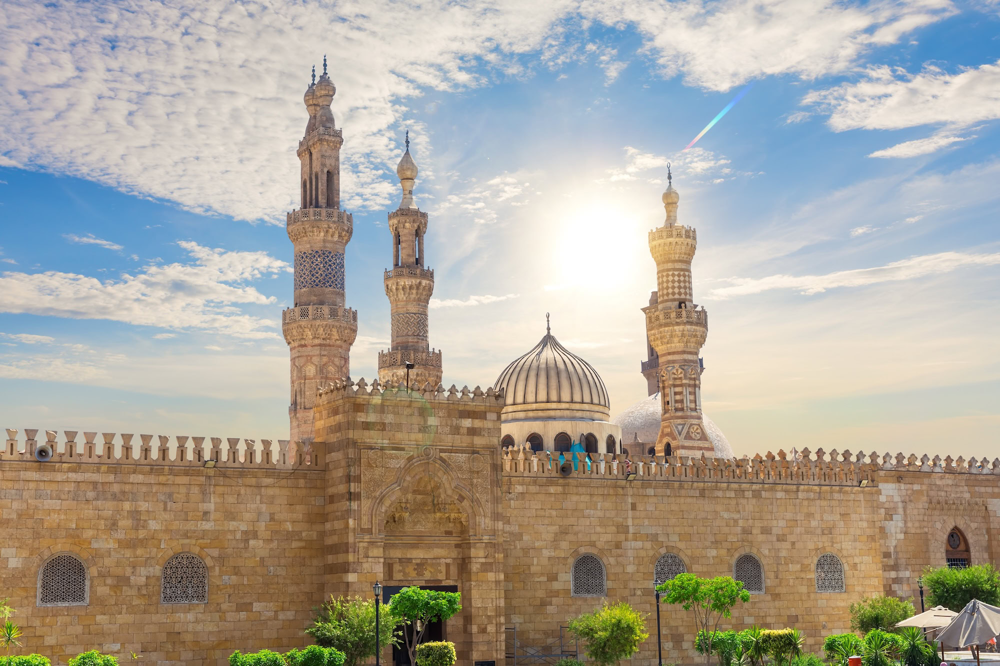

𓂀𓃭𓆣𓇳𓂋𓅃𓃀
Cultural Heritage
Khan El Khalili
Cairo's Legendary Medieval Bazaar
Cairo's Legendary Medieval Bazaar
Khan El Khalili is one of the oldest and most iconic bazaars in the Middle East. Founded in 1382 during the Mamluk era, this labyrinthine marketplace is a sensory explosion of colors, sounds, and scents. From handcrafted gold jewelry to aromatic spices, every alley holds a treasure waiting to be discovered.
Built by Emir Djaharks el-Khalili as a caravanserai — a medieval inn for traveling merchants — the bazaar quickly became the commercial heart of Cairo. For over six centuries, it has been the center of Egyptian craft and trade. The famous El Fishawi café, established in 1773, has been serving tea and shisha without closing for over 250 years. Today, the bazaar sits in the heart of Islamic Cairo, surrounded by stunning medieval architecture.
Make the most of your visit with these experiences.
Browse handcrafted jewelry, papyrus art, alabaster, brass lanterns, and traditional textiles.
Sip mint tea and smoke shisha at the 250-year-old café where Mahfouz wrote his novels.
Explore the aromatic spice market with colorful mountains of saffron, cumin, and hibiscus.
Discover traditional Egyptian gold and silver jewelry in the dedicated precious metals section.
Visit the adjacent Al-Azhar Mosque, one of the world's oldest universities founded in 970 AD.
Try koshari, ful, falafel, and fresh juice from the food stalls surrounding the bazaar.
See the beauty that awaits you.




Everything you need to know for a perfect visit.
Start at 40% of the asking price and negotiate up. Bargaining is expected and enjoyed.
The bazaar comes alive after sunset. Evening visits are more atmospheric and cooler.
Keep valuables in a front pocket or body bag. The narrow alleys can get very crowded.
When a shopkeeper offers tea, accepting is polite and part of the shopping experience.
The mosque next door is free to enter and provides a tranquil escape from the crowds.
Ask permission before photographing shopkeepers. The lantern shops are the most photogenic.
Open year-round. Evening visits are most atmospheric. Cooler months (Oct-Mar) are most comfortable.
Immerse yourself in the wonder of Khan El Khalili. Let this journey inspire your next Egyptian adventure.

Let our local experts craft the perfect itinerary for your Egyptian adventure.